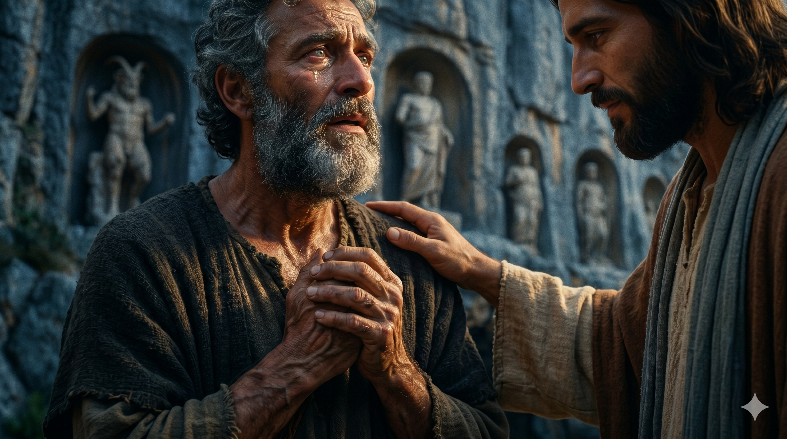

갈릴리 북쪽 끝, 헤르몬 산자락 가이사랴 빌립보의 한 절벽 앞 — 거대한 화강암 절벽에는 헬라 신과 로마 황제의 신상이 줄지어 새겨져 있고, 그 아래 어둑한 동굴(판의 동굴)에서는 차가운 물이 솟아오른다. 그 이방 신들의 한복판에서 한 분이 제자들에게 한 질문을 던지시고, 한 어부 베드로가 한 발 앞으로 나서며 떨리는 목소리로 한 마디를 토해낸다 — "주는 그리스도시요 살아 계신 하나님의 아들이시니이다." 그의 한 마디 위에 한 시대가 열린다.
예수께서 빌립보 가이사랴 지방에 이르러 제자들에게 물어 이르시되 사람들이 인자를 누구라 하느냐 이르되 더러는 세례 요한, 더러는 엘리야, 어떤 이는 예레미야나 선지자 중의 하나라 하나이다 이르시되 너희는 나를 누구라 하느냐 시몬 베드로가 대답하여 이르되 주는 그리스도시요 살아 계신 하나님의 아들이시니이다 예수께서 대답하여 이르시되 바요나 시몬아 네가 복이 있도다 이를 네게 알게 한 이는 혈육이 아니요 하늘에 계신 내 아버지시니라 — 마태복음 16:13–17
한 분이 제자들을 갈릴리 북쪽 끝, 가이사랴 빌립보까지 데리고 올라가신 그 한 걸음에는 한 가지 의도가 담겨 있었습니다. 가이사랴 빌립보는 헤르몬 산 기슭의 한 도시 — 거대한 화강암 절벽 아래 "판의 동굴"이라 불리는 한 어둑한 동굴이 있고, 그 절벽 위로는 헬라의 목신 판(Pan)과 로마 황제의 신상들이 줄지어 새겨져 있던 한 이방 신들의 중심지였습니다. 곧 그 절벽 앞은 사람의 가슴이 자기 앞에 줄지어 선 거짓 신들의 무게에 짓눌리는 한 자리였습니다. 그 한복판에서 한 분이 한 질문을 던지십니다 — "사람들이 인자를 누구라 하느냐"(마 16:13). 제자들은 사람들의 의견을 한 줄로 늘어놓습니다 — 세례 요한, 엘리야, 예레미야, 선지자 중의 하나. 모두가 한 분을 위대한 한 사람으로 평가하지만, 누구도 그분을 "그분 자신"으로 알아보지는 못한 한 시대의 안타까운 한 풍경이었습니다.
그 다음 한 질문이 한 분의 입에서 두 번째로 떨어집니다 — "너희는 나를 누구라 하느냐"(마 16:15). 헬라어 원문에서 "너희"(ὑμεῖς, 휘메이스)는 강조형으로 쓰여, "다른 사람들이야 그렇다 치고, 정말로 너희는"이라는 한 정직한 도전이 담겨 있습니다. 이 한 질문 앞에서 한 어부가 한 발 앞으로 나섭니다 — "주는 그리스도시요 살아 계신 하나님의 아들이시니이다"(마 16:16). 헬라어로 "쉬 에이 호 크리스토스, 호 휘오스 투 데우 토 존토스" — 정관사(ὁ, 호)가 두 번 반복되며 "바로 그 그리스도, 바로 살아 계신 그 하나님의 아들"임을 정확하게 못 박습니다. 한 어부의 입에서 사천 년을 기다려 온 한 고백이 처음으로 또렷이 흘러 나온 것입니다. 그러자 한 분이 즉시 응답하십니다 — "바요나 시몬아 네가 복이 있도다 이를 네게 알게 한 이는 혈육이 아니요 하늘에 계신 내 아버지시니라"(마 16:17). 곧 한 어부의 한 고백은 그의 천재성에서 솟아난 것이 아니라, 하늘에서 그의 가슴 안으로 부어진 한 계시였습니다. 그분은 이어 그 고백 위에 한 약속을 얹으십니다 — "이 반석 위에 내 교회를 세우리니 음부의 권세가 이기지 못하리라"(마 16:18). 사천 년의 교회가 그 한 어부의 한 고백 위에 세워지는 한 거룩한 약속의 한 정오였습니다.

한 어부의 두 손이 떨리며 가슴 앞에 모이고, 그 입에서 한 마디가 흘러나오는 순간 — 그분의 두 눈이 그 한 사람을 깊이 들여다보며, 그분의 한 손이 그 어부의 어깨 위에 부드럽게 얹힌다. 거짓 신들의 절벽 앞에서, 한 어부의 한 고백 위에 한 교회가 첫 돌을 놓는 거룩한 정지의 한 순간.
한 분의 두 질문은 사천 년이 지난 오늘도 여전히 우리 가슴 앞에 그대로 놓여 있습니다. 첫 번째 질문 — "사람들이 인자를 누구라 하느냐." 이 질문에는 누구나 쉽게 대답합니다. 책에서 읽은 답, 설교에서 들은 답, 어른들에게 배운 답을 한 줄로 늘어놓을 수 있습니다. 그러나 두 번째 질문 — "너희는 나를 누구라 하느냐"는 한 사람의 가슴을 정면으로 두드리는 한 질문입니다. 다른 사람의 답이 아닌, 나 자신의 답을 요구하는 한 질문입니다. 오늘 한 분이 당신의 가슴 앞에 와서 그 한 질문을 똑같이 던지신다면, 당신은 무엇이라고 대답하시겠습니까. 책에서 배운 한 줄의 정답이 아니라, 자기 일생을 통과한 한 마디의 고백을 가지고 계십니까. 그 고백이 자기 입에서 떨리며 흘러나올 때, 비로소 한 사람의 신앙이 한 분 앞에 정직하게 서기 시작합니다.
또 한 가지 — 베드로의 한 고백은 그의 똑똑함에서 나온 것이 아니라, 하늘에서 그의 가슴 안으로 부어진 한 계시였습니다. "이를 네게 알게 한 이는 혈육이 아니요 하늘에 계신 내 아버지시니라"(마 16:17). 곧 한 사람이 그분을 "주"라고 부를 수 있게 되는 그 자리는, 자기 노력의 결실이 아니라 하늘의 한 선물입니다. 그러므로 오늘 당신이 그분을 "주"라고 한 마디만이라도 부를 수 있다면, 그 한 마디의 무게를 가볍게 여기지 마십시오. 그것은 사천 년 전 한 절벽 앞에서 한 어부의 가슴에 부어진 그 한 계시가, 오늘 당신의 가슴에도 똑같이 부어졌다는 한 증거입니다. 그 한 고백 위에 한 분은 오늘도 한 교회를 세우시며, 음부의 권세가 그것을 이기지 못한다고 약속하십니다. 당신의 한 마디 고백이, 한 시대의 한 자리를 떠받치고 있는 한 반석입니다.
다른 사람의 답이 아닌, 자기 일생을 통과한 한 마디의 고백을 가지고 계십니까.
"주"라는 한 마디는 자기 노력의 결실이 아니라, 하늘에서 부어진 한 선물입니다.
오늘, 거짓 신들의 절벽 앞에 서서 한 분의 이름을 떨리는 입술로 다시 한 번 부르십시오.